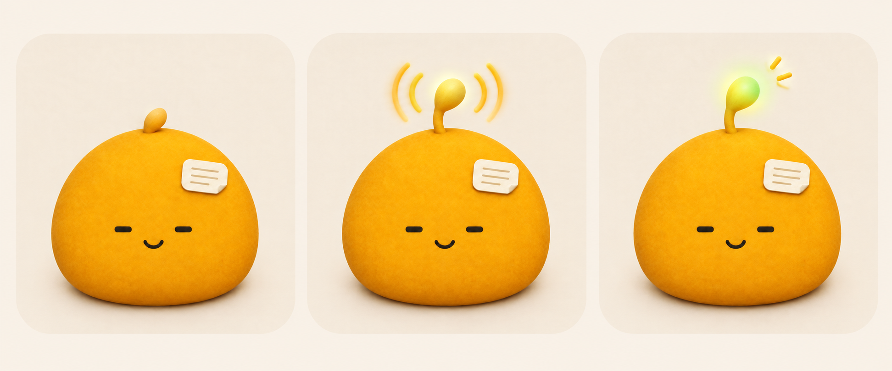

WORKET / CHARACTER STUDY 01
给日常工作，一点性格。
外形探索 · 尚未应用
之前的拟物版
↗
实现与取舍 ↗
轮廓与表情
放大细节
当前 · 原样载入
新方案 · 1×
78 × 70.5 px 布局
四向贴边 · 1×
窗口 68 × 32 / 32 × 68 px
休息
记录中
沉淀中
完成
异常
暂停动效
←
→
之前的拟物方向
×

2026-09-22 的概念图。材质很完整，但放大图不能证明小尺寸表情、透明边缘和贴边动画已解决。
×